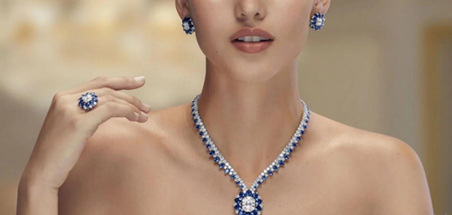

Home
Parte de lo que hace una buena campaña de marketing es conseguir diferenciarnos y, por eso, la empresa debe preguntarse antes que cualquier otra cosa cuáles son sus objetivos con este plan de marketing: ¿busca conseguir visibilidad, ganar prestigio, fidelizar a los clientes o mejorar su comercio online, por ejemplo? Una vez que tengas eso claro podrás ponerte en marcha siguiendo algunas de las estrategias de marketing para joyerías que mencionamos a continuación:
